，…，b，b′，b″，…之积；因子b，b′，b″，…的个数是偶数（或者它们不出现，也将此归结为这种情形）．现在如果a是A的剩余，那么它也是所有因子a′，a″，a，…，b，b′，b″，…的剩余，由前节命题1，3，每个这些因子是a的因而也是乘积A及-A的剩余．并且如果-a是A的剩余，那么正是由于这个事实它也是所有因子a′，a″…，b，b′，…的剩余；a′，a″，…中每个数是a的剩余，b，b′，…中每个数是非剩余．但因为后者个数是偶数，所以它们的乘积即A是a的剩余，因而-A也是a的剩余．
，…，b，b′，b″，…之积；因子b，b′，b″，…的个数是偶数（或者它们不出现，也将此归结为这种情形）．现在如果a是A的剩余，那么它也是所有因子a′，a″，a，…，b，b′，b″，…的剩余，由前节命题1，3，每个这些因子是a的因而也是乘积A及-A的剩余．并且如果-a是A的剩余，那么正是由于这个事实它也是所有因子a′，a″…，b，b′，…的剩余；a′，a″，…中每个数是a的剩余，b，b′，…中每个数是非剩余．但因为后者个数是偶数，所以它们的乘积即A是a的剩余，因而-A也是a的剩余．▶94.定理 如果我们取某个数m作模，那么在数0，1，2，3，…，m-1中同余于一个平方数的数，当m是偶数时不可能多于m/2+1个，而当m是奇数时不可能多于m／2+1/2个．
证 因为同余的数的平方也互相同余，所以任何一个同余于一个平方数的数也同余于某个平方根＜m的平方数．于是只需考虑平方数0，1，4，9，…，（m-1）2的最小剩余，但易见（m-1）2≡1，（m-2）2≡22，（m-3）2≡32，…，所以当m是偶数时，平方数［（m/2）-1］2与［（m/2）+1］2，［（m/2）-2］2与［（m/2）+2］2，…分别有相同的最小剩余；而当m是奇数时，平方数［（m/2）-（1/2）］2与［（m/2）+（1/2）］2，［（m/2）-（3/2）］2与［（m/2）+（3/2）］2，…分别同余．由此推出：当m是偶数时，除了与平方数0，1，4，9，…，（m/2）2中的一个数同余的那些数外，没有其他的数同余于平方数；当m为奇数时，任何与平方数同余的数必定同余于0，1，4，9，…，［（m/2）-（1/2）］2中的某个数．因此，在前一情形，至多有m/2+1个不同的最小剩余，在后一情形，它们至多有m/2+1/2个．（证完）
例 对于模13．平方数0，1，22，32，…，62的[1]最小剩余是0，1，4，9，3，12，10，并且其后它们以相反的顺序10，12，3，…出现．因此一个数若不与这些剩余之一同余，亦即若同余于2，5，6，7，8，11，则不可能同余于平方数．
对于模15，我们求出剩余0，1，4，9，1，10，6，4，其后同样的数以相反的顺序出现，因此在此可以同余于平方数的剩余的个数小于m/2+1/2，因为只有0，1，4，6，9，10在上面列出的数中出现，数2，3，5，7，8，11，12，13，14以及任何与它们同余的数不可能对于模15同余于平方数．
▶95.因此，对于任何模所有的数可以分为两类，一类包含可同余于平方数的数，另一类则不能．我们将前者称作我们取作模的那个数的二次剩余[2]，而后者称作数的二次非剩余．在不引起混淆时我们将它们简称为剩余和非剩余．另外，我们只需将所有的数0，1，2，…，m-1分类，因为与它们中某个数同余的数将分在同一类．
在这个研究中我们将从素数模开始，并且甚至若不加说明也这样理解．但我们必须排除素数2，因而只考虑奇素数．
▶96.如果取素数p为模，那么数1，2，3，…，p-1中有一半是二次剩余，其余的是非剩余；亦即有（p-1）/2个剩余及同样个数的非剩余．
容易证明所有平方数1，4，9，…，（p-1）2/4互不同余．这是因为如果r2≡（r′）2（mod p），其中r，r′不相等且不大于（p-1）/2及r＞r′，那么（r-r′）（r+r′）是正的，且被p整除，但每个因子（r-r′）和（r+r′）都小于p，所以假设不可能成立（见第13节）．因此在数1，2，3．…，p-1中有（p-1）/2个二次剩余．不可能有更多的二次剩余，因为如果我们增加剩余0，那么它们变成（p+1）/2个，总起来就大于全部剩余的个数．于是其余的数是非剩余，而它们的个数=（p-1）/2．
因为0总是一个剩余，所以我们将它及所有被模整除的数排除在我们的研究之外．这个情形是显然的，并且对于我们定理的机巧性没有任何影响．由于同样的原因我们也排除2作模．
▶97.因为我们在本章要证明的许多结果可以从前章的原理推出，并且因为不可能用与此不同的方法发现同样的结果，所以我们将继续指出它们的关系．容易验证所有同余于平方数的数有偶指标，而不同余于平方数的数有奇指标．并且因为p-1是一个偶数，所以偶指标与奇指标一样多，即都是（p-1）/2个，因而也存在同样个数的剩余和非剩余．
例
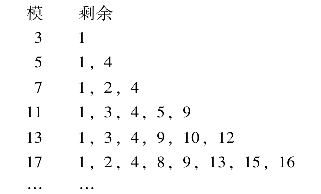
并且所有其他小于模的数都是非剩余．
▶98.定理 素数p的两个二次剩余之积是一个剩余；一个剩余与一个非剩余之积是一个非剩余；最后，两个非剩余之积是一个剩余．
证 Ⅰ．设A，B是平方数a2，b2的剩余；这就是A≡a2，B≡b2．那么乘积AB同余于数ab的平方；亦即它是一个剩余．
Ⅱ．如果A是一个剩余，例如≡a2，而B是一个非剩余，那么AB将是一个非剩余．因为若我们设AB≡k2，并且设表达式k/a（mod p）≡b．那么我们因而有a2B≡a2b2及B≡b2；亦即B是一个剩余，与假设矛盾．
另法．取出1，2，3，…，p-1中所有是剩余的数（它们共有（p-1）/2个）．将它们每个乘以A，那么所有乘积都是二次剩余且互不同余，现在如果用A乘非剩余B，那么这个乘积不同余于刚才得到的任何一个乘积．因此，如果它是一个剩余，那么我们将有（p+1）/2个互不同余的剩余，而且我们也没有将剩余0包括在其中．这与第96节的结果相矛盾．
Ⅲ．设A，B是非剩余．用A乘1，2，3，…，p-1中所有的是剩余的数，我们还有（p-1）/2个互不同余的非剩余（见Ⅱ）；乘积AB不可能与它们中任何一个同余；所以如果它是一个非剩余，那么我们将有（p+1）/2个互不同余的非剩余，这与第96节的结果相矛盾．因此乘积AB是一个剩余．（证完）
这些定理可以更容易地由前一章的原理推出．因为剩余的指标总是偶数，而非剩余的指标总是奇数，所以两个剩余或两个非剩余之积的指标是偶数，因而乘积本身是一个剩余．另一方面，一个剩余与一个非剩余之积的指标是奇数，因而乘积本身是一个非剩余．
这个证法也可以用于下列定理：当a，b都是剩余或都是非剩余时，表达式a/b（mod p）是一个剩余；当a，b中一个是剩余另一个是非剩余时，这个表达式是一个非剩余．它们也可以通过转化为前面的定理来证明．
▶99.一般地，任意多个因子中，若所有因子都是剩余或者其中非剩余的个数是偶数，则它们的积是一个剩余；若这些因于中非剩余的个数是奇数，则这个乘积是非剩余．于是只要弄清楚合数的各个因子是剩余或是非剩余就容易判断这个合数是否是一个剩余．这就是表2中我们只包含素数的原因．表是这样安排的：模[3]位于靠边的一列，素数逐个地排在顶行，如果一个素数是某个模的剩余，那么在与它们对应的位置有一个横道；如果一个素数是某个模的非剩余，那么让与它们对应的位置空着．
▶100.在研究更困难的课题前，让我们对非素数模作一些补充说明．
如果模是素数p的幂pn（我们设p不等于2），那么所有不被p整除且小于pn的数有一半是剩余，另一半是非剩余；亦即它们的个数都=［（p-1）pn-1）］/2．
因为如果r是剩余，那么它同余于一个平方根不超过模的一半的平方数（见第94节）．易见有［（p-1）pn-1］／2个数不被p整除且小于模的一半；剩下的事是证明所有这些数的平方互不同余，亦即它们产生不同的二次剩余．现在如果a，b是两个不被p整除且小于模的一半的数（设a＞b），它们的平方同余，那么a2-b2即（a+b）（a-b）可被pn整除．而这是不可能的，除非或者数（a+b），（a-b）中有一个被pn整除（但因为它们每个都＜pn，所以不可能），或者它们中一个被pm，另一个被pn-m整除（但这也不可能，因为这意味着它们的和及差2a和2b都被p整除，从而a和b都被p整除，与假设矛盾）．于是最终可知在不被p整除且小于模的数中有［（p-1）pn］／2个剩余，而其余同样个数的数是非剩余．（证完）这个定理也可如第97节那样通过考虑指标来证明．
▶101.任何不被p整除并且是p的剩余的数也是pn的剩余；如果它是p的非剩余，那么也是pn的非剩余．
定理的第二部分是显然的．如果第一部分不正确，那么在小于pn且不被p整除的数中，p的剩余个数将比pn的剩余个数多，亦即多于［pn-1（p-1）］/2．但显然在这些数中p的剩余的个数恰好=［pn-1（p-1）］／2．
因此如果我们有一个对于模p同余于一个给定的剩余的平方数，那么就容易找到对于模pn同余于这个剩余的平方数．
如果我们有一个平方数a2对于模pμ同余于一个给定的剩余A，那么我们可以用下列方法找到对于模pν同余于A的平方数（我们在此设ν＞μ并且≤2μ）．设我们要找的平方根=±a+xpμ．易见它应当有这种形式．我们还应当有a2±2axpμ+x2p2μ≡A（mod pν），或若2μ＞ν，有A-a2≡±2axpμ（mod pν）．令A-a2=pμd，则x就是表达式±d/2a（mod pνμ）的值，而这个表达式等价于±（A-a2）/2apμ（mod pν）．
因此若给定一个对模p同余于A的平方数，则我们可以由它推导出对模p2同余于A的平方数；由此又可推进到模p4，然后p8，等等．
例 如果我们给定剩余6，它对于模5同余于平方数1，我们求得对于25同余于它的平方数92，对于125同余于它的平方数162，等等．
▶102.考察被p整除的数，显然它的平方被p2整除，所以所有被p整除但不被p2整除的数是pn的非剩余．一般，如果我们有一个数pkA，其中A不被p整除，那么我们可以区分下列一些情形：
1）若k≥n，则我们有pkA≡0（mod pn），即它是一个剩余．
2）若k＜n且是奇数，则pkA是一个非剩余．
这是因为如果我们有pkA=p2x+1A≡s2（mod pn），那么s2可被p2x+1整除．这是不可能的，除非s被px+1整除；但此时p2x+2整除s2，因而（因为显然2x+2必然不大于n）也整除pkA，亦即整除p2x+1A，而这意味着p整除A，与假设矛盾．
3）若k＜n且是偶数，则依据A是p的剩余或非剩余，pkA是pn的剩余或非剩余．
这是因为当A是p的剩余时也是pn-k的剩余．如果我们设A≡a2（mod pn-k），那么可得Apk≡a2pk（mod pn），并且a2pk是平方数．另一方面，当A是p的非剩余时，pkA不可能是pn的剩余；因为若pkA≡a2（mod pn），则pk必定整除a2，它们的商是一个平方数，且A对模pn-k与它同余，因而对模p也与它同余，即a是一个剩余，与假设矛盾．
▶103.因为上面我们排除了p=2的情形，我们现在来对此情形作些讨论．当数2为模时，每个数都是剩余，并且没有非剩余．当4是模时，所有4k+1形式的奇数是剩余，所有4k+3形式的奇数是非剩余．当8或2的更高的幂为模时，所有8k+1形式的奇数是剩余，所有其他形式即8k+3，8k+5，8k+7形式的奇数是非剩余．这个命题的最后一部分从下列事实可知是显然的：任何奇数，无论它是4k+1或4k-1形式，其平方都是8k+1形式的．命题的第一部分证明如下：
1）如果两个数的和或差能被2n-1整除，那么这些数的平方对于模2n互相同余．因为若其中之一是a，则另一数可表示为2n-1h±a，因而其平方≡a2（mod 2n）．
2）任何是2n的剩余的奇数必同余于一个平方数，而这个平方数的平方根是＜2n-2的奇数．因为若设a2是与这个给定数同余的平方数，并设a≡±α（mod 2n-1），其中α不超过模的一半（见第4节）；那么a2≡α2，因而给定的数≡α2．显然a和α都是奇数并且α＜2n-2．
3）所有小于2n-2的奇数的平方对于2n是互不同余的．因为若令r和s是两个这样的数，且它们的平方对2n同余，则（r-s）（r+s）可被2n整除（我们设r＞s）．易见数r-s，r+s均不能被4整除，所以若其中仅有一个被2整除，则另一个将可被2n-1整除以使它们的乘积能被2n整除；因为它们每个都＜2n-2．（证完）
4）如果将这些平方数简化为它们的最小正剩余，那么我们将有2n-3个不同的小于模的二次剩余[4]，并且它们每个都是8k+1形式的．但因为恰好有2n-3个小于模的8k+1形式的数，所以所有这些数必定全是剩余．
要找一个对于模2n与给定的8k+1形式的数同余的平方数，可以应用与第101节类似的方法；对此还可见第88节．最后，对于偶数，我们在102节所说的一般性结果在此都有效．
▶104.设A是pn的剩余，我们来考虑表达式V=
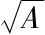
（mod pn）的不同（亦即对于模互不同余）容许值的个数，我们容易由前面的结果推出下列结论（和过去一样，我们设p是素数，并且为简明起见我们包括n=1的情形）．Ⅰ．如果p不整除A，那么当p=2，n=1时V有一个值，即V=1；当p是奇数或p=2，n=2时有两个值，即若其中一个≡v，则另一个≡-v；当p=2，n＞2时有四个值，即若其中一个≡v，则其余的分别≡-v，2n-1+v，2n-1-v．
Ⅱ．如果A被p整除但不被pn整除，令整除A的p的最高次幂是p2μ（因为显然这个指数应是偶数），并且我们有A=ap2μ．显然pμ整除V的所有值，并且由除法产生的所有的商都是表达式V′=
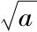
（mod pn-2μ）的值；因此用pμ乘V′的所有落在0和pn-μ之间的值即得V的所有值．由此我们得到vpμ，vpμ+pn-μ，vpμ+2pn-μ，…，vpμ+（pμ-1）pn-μ，
其中v表示V′的所有不同的值，因而依V′的值的个数（由情形Ⅰ）是1，2或4可知V的不同值的个数分别为pμ，2pμ或4pμ[5]．
Ⅲ．如果pn整除A，那么易见，若令n=2m或n=2m-1（依n是偶数或奇数），则所有能被pm整除的数都是V的值；但这些数就是0，pm，2pm，…，（pn-m-1）pm，因而它们的个数是pn-m．
▶105.剩下还要考虑模是合数的情形，设m=abc…，其中a，b，c，…是不同的素数或不同素数的幂．显然立即可知，如果n是m的剩余，那么它也是a，b，c，…中每个数的剩余，并且如果它是a，b，c，…中任一数的非剩余，那么它也是m的非剩余．而且，反过来，如果n是a，6，c，…中每个数的剩余，那么它也是乘积m的剩余．为此，设对于模a，b，c，…分别有n≡A2，B2，C2，…．如果我们找到对于模a，b，c，…分别与a，b，c，…同余的数N（见第32节），那么对于所有这些模我们有n≡N2，因而对于乘积m这个同余式也成立．由A的任何值（即表达式
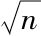
（mod a）的值），与B的任何值及C的任何值，等等的组合，我们得到N亦即表达式（mod m）的值，并且由不同的组合得到N的不同值，而由所有的组合得到N的所有值．因此，N的所有不同值的个数等于A，B，C，…的不同值的个数（我们在前节说过如何确定它们）之积．显然，如果已知表达式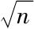
（mod m）即N的一个值，那么它也是所有A，B，C，…的值；并且因为从前节我们已经知道怎样由这些量的一个值推出所有其余的值，所以由N的一个值可得到它的所有其余的值．例 设模为315．我们想知道46是剩余还是非剩余．315的素因子是3，5，7，而且46是这每个数的剩余；因此它也是315的剩余．还有，因为46≡1及≡64（mod 9）；≡1及≡16（mod 5）；≡4及≡25（mod 7），所以对于模315与46同余的平方数的平方根是19，26，44，89，226，271，289，296．
▶106.由刚才我们证明的结果可以看到，如果我们只能确定一个给定的素数是否是另一个给定素数的剩余或非剩余，那么所有其他情形都可归结于这种情形．因此我们试图研究对于这种情形的某些判别法则．但在做这件事之前我们要证明一个由前节结果推出的一个判别法则．虽然它几乎没有实际用途，但由于它的简单和一般性还是值得提及的．
任何不被素数2m+1整除的数A，依Am≡+1或≡-1（mod（2m+1）），是这个素数的剩余或非剩余．
因为若a是数A在任意系统中[6]对于模2m+1的指标，则当A是2m+1的剩余时a是偶数，当A是2m+1的非剩余时a是奇数．但数Am的指标是ma，亦即依a是偶数或奇数，它≡0或≡m（mod m）．在前一情形Am≡+1，而在后一情形它≡-1（mod（2m+1））（见第57节，第62节）．
例 因为36≡1（mod 13），所以3是13的剩余，但2是13的非剩余，因为26≡-1（mod 13）．
但一旦我们考察的数甚至只是中等大小，由于所包含的计算量，使这个判别法则实际上没有什么价值．
▶107.如果给定了模，那么很容易刻画所有是剩余或非剩余的数．若这个模=m，我们定出平方根不超过m的一半的平方数以及对于m与这些平方数同余的数（实际上还有更方便的方法）．所有对于m与它们中任何一个同余的数就是m的剩余，所有与它们中任何一个都不同余的数就是m的非剩余．但其反问题，即给定一个数，求出所有以它为剩余或非剩余的数，是一个要难得多的问题．前节中所说的结果就依赖于这个问题的解．我们现在从最简单的情形开始研究这个问题．
▶108.定理 -1是所有4n+1形式的数的二次剩余及所有4n+3形式的数的二次非剩余．
例 -1是数5，13，17，29，37，41，53，61，73，89，97，…的剩余，它们分别由数2，5，4，12，6，9，23，11，27，34，22，…的平方产生；另一方面，它是数3，7，11，19，23，31，43，47，59，67，71，79，83，…的非剩余．
我们在第64节提到过这个定理，但最好像第106节那样证明．对于4n+1形式的数我们有（-1）2n≡1，对于4n+3形式的数有（-1）2n+1≡-1．其证明与第64节中的一样，但由于这个定理的机巧和有用，我们还要给出它的另一个证明．
▶109.我们用字母C表示素数p的所有小于p的剩余（但不包括剩余0）的总体．因为这些剩余的个数始终=（p-1）/2，所以显然C中所含的剩余的个数[7]当p是4n+1形式时是偶数，当p是4n+3形式时则为奇数．采用与第77节类似的关于数的一般性术语，我们称乘积≡1（mod p）的剩余为相伴剩余；因为如果r是一个剩余，那么1/r（mod p）也是一个剩余．并且因为同一个剩余不可能和C中多个剩余相伴，因此显然C中所有剩余可以划分为一些类，使得每个类含有一对相伴剩余．现在如果没有剩余与自身相伴，亦即如果每个类含有一对不相等的剩余，那么所有剩余的个数是类数的2倍；但如果存在一些剩余与自身相伴，亦即存在只含有一个剩余的类，或者，如果你愿意，也可以说同一个剩余含有2次，那么C中所有剩余的个数=a+2b，其中a是第二种类型的类的个数，而b是第一种类型的类的个数．因此，当p是4n+1形时，a是偶数，而当p是4n+3形时，a是奇数．但除了1和p-1外没有一个数可以小于p而又与自身相伴（见第77节）；而在第一个类的剩余中必定有1．所以在前一情形p-1（或-1，这是一回事）必定是一个剩余，在后一情形它必定是一个非剩余．不然，在第一种情形将有a=1，而在第二种情形将有a=2，这是不可能的．
▶110.这个证明属于欧拉．也是他第一个发现上面的方法（见Opuscula Analytica，1）．易见它依据的原理与我们威尔逊定理的第二个证明（见第77节）的原理非常类似．并且如果我们假定这个定理是正确的，那么前面的证明就变得非常简单，因为在数1，2，3，…，p-1存在（p-1）/2个p的二次剩余及同样个数的非剩余；所以当p是4n+1形式时非剩余个数是偶数，当p是4n+3形式时非剩余个数是奇数．于是所有数1，2，3，…，p-1的乘积，在前一情形是一个剩余，在后一情形是非剩余（见第99节）．但这个乘积始终≡-1（mod p），因此在前一情形-1也是剩余，在后一情形是非剩余．
▶111.因此如果r是任何一个4n+1形式的素数的剩余，那么-r也是这个素数的剩余；并且这种素数的所有非剩余甚至将它们变号也都仍然是非剩余[8]．相反的结论对于4n+3形式的素数成立．剩余变号后成为非剩余，而且反过来也对（见第98节）．
从上述结果可推出一般法则：-1是所有不被4整除的数或任何4n+3形式的素数的剩余；是所有其他数的非剩余（见第103节，第105节）．
▶112.让我们来考虑剩余+2和-2．
如果我们从表2将所有的剩余为+2的素数挑出来，可得到7，17，23，31，41，47，71，73，79，89，97．我们注意在这些数中没有一个是8n+3或8n+5的形式．
于是我们要考虑这个归纳是否具有必然性．
首先，我们注意任何8n+3或8n+5形式的合数必定有一个或多个8n+3或8n+5形式的素因子；因为若只有8n+1或8n+7形式的素因子，则我们将得到8n+1或8n+7形式的数．因此如果我们的归纳是一般地正确的，那么没有8n+3或8n+5形式的数可以以+2作为剩余．现在确实没有小于100的这种形式的数以+2为剩余．但如果存在大于100的这样的数，我们设其中最小的=t．数t必是8n+3或8n+5形式的；+2是t的剩余但是是同类形式且小于t的数的非剩余．设2≡a2（mod t）．我们总可以找到a使它为奇数同时＜t（因为a至少有两个小于t且和=t的正值，其中一个是偶数，另一个是奇数；对此见第104和105节）．令a2=2+tu（也就是tu=a2-2）；a2是8n+1形式的，而tu是8n-1形式的；因此依t是8n+5或8n+3形式，u将有8n+3或8n+5形式．但由方程a2=2+tu我们也有2≡a2（mod u）；即2是u的剩余．易见u＜t，因而t不是我们归纳中的最小数，这与假设矛盾．于是我们通过归纳发现的结果被证明在一般情形是正确的．
将此命题与笫111节的命题合并可推出下列定理．
Ⅰ．对于所有8n+3形式的素数，+2是非剩余，-2是剩余．
Ⅱ．+2和-2是所有8n+5形式的素数的非剩余．
▶113.从表2作类似的归纳我们发现剩余是-2的素数是：3，11，17，19，41，43，59，67，73，83，89，97．[9]因为这些数中没有8n+5和8n+7形式的，我们考虑这个归纳能否使我们导致一般性定理．如同前节那样我们证明没有一个8n+5或8n+7形式的合数可以有8n+5或8n+7形式的素因子，从而如果我们的归纳一般地正确，那么-2不可能是8n+5或8n+7形式的数的剩余．但若这样的数存在，则令其中最小的=t，并且我们得到-2=a2-tu．同上，如果取a为小于t的奇数，那么依t是8n+7或8n+5形式的，u将是8n+5或8n+7形式的．但由a2+2=tu及a＜t的事实容易证明u也小于t．最后，-2也是u的剩余；亦即t不是最小的以-2为剩余的数，这与假设矛盾，因此-2一定是所有8n+5和8n+7形式的数的非剩余．
将此结果与第111节的命题结合，我们得到下列定理．
Ⅰ．-2和+2是所有8n+5形式的素数的非剩余（如我们在前节已见）．
Ⅱ．-2是所有8n+7形式的素数的非剩余，+2是它们的剩余．
当然，在每个证明中我们也可以令a取偶数值；但这样我们要将a是4n+2形式和a是4n形式加以区分．于是我们可以毫无困难地如上面那样继续进行下去．
▶114.还剩下一种情形，即当素数是8n+1形式的．在此不能应用以前的方法，而需要特殊的方法．
令8n+1是一个素数模，a是一个原根．于是我们有a4n≡-1（mod 8n+1）（见第62节）．这个同余式可表示为（a2n+1）2≡2a2n（mod 8n+1），或（a2n-1）2≡-2a2n．由此推出2a2n和-2a2n是8n+1的剩余；但因为a2n是不被模整除的平方数，所以+2和-2也是剩余（见第98节）．
▶115.在此补充这个定理的另一个证明将是有益的．它与上面证明之间的关系就如同以前第108节定理的第二个证明（见第109节）与第一个证明（见第108节）间的关系．熟练的数学家可以看出这两对证明并不像初看起来有那么大的差别．
Ⅰ．对于任何4m+1形式的素数模，在数1，2，3，…，4m中存在m个数可同余于双二次数，而其余3m个数则不能．
这容易从前节的原理推出，但即使不应用它们也不难得到．因为我们已经证明-1对于这样的模总是二次剩余．于是设f2≡-1．显然，如果z是任何一个不被模整除的数，4个数+z．-z，+fz，-fz（显然它们互不同余）的4次方是互相同余的．并且任何一个不与这四个数同余的数的4次方不可能与它们的4次方同余（不然同余式x4≡z4是4次的，但根的个数多于4，与第43节的结果矛盾）．因此我们推出所有的数1，2，3，…，4m只能提供m个互不同余的双二次数，并且在同样的这些数中有m个数与双二次数同余．而其余的数不可能与双二次数同余．
Ⅱ．对于8n+1形式的素数模，-1可以同余于双二次数（-1被称为这个素数模的双二次数剩余）．
所有小于8n+1的双二次数剩余的个数（排除0）=2n，亦即是一个偶数．容易证明若r是8n+1的双二次数剩余，则表达式1/r（mod 8n+1）的值也是这种剩余．因此所有双二次数剩余可以像在第109节划分二次剩余那样分成一些类，而证明的其余部分几乎与那里完全一样．
Ⅲ．设g4≡-1，h是表达式1/g（mod 8n+1）的值．那么我们有
（9±h）2=g2+h2±2gh≡g2+h2±2
（因为gh≡1）．但g4≡-1，因而-h2≡g4h2≡g2．于是g2+h2≡0，并且（g±h）2≡±2，亦即+2和-2都是8n+1的二次剩余．（证完）
▶116.由前面的结果我们容易推出下列一般法则：+2是任何不被4或任何8n+3及8n+5形式的素数整除的数的剩余，以及所有其他数〔例如所有8n+3和8n+5形式的数（无论是素数还是合数）〕的非剩余；一2是任何不被4或任何8n+5及8n+7形式的素数整除的数的剩余，以及所有其他数的非剩余．
这些机巧的定理对于富有洞察力的费马是已知的结果（见Opera Mathem．[10]），但他从来没有公布过他所断言的他给出的证明．后来欧拉徒劳地对它们进行了研究，但拉格朗日发表了第一个严格的证明（Nouv．mém．Acad．Berlin，1775）．看来欧拉在写他的Opuscula Analytica（1）[11]中的论文时对此还不知情．
▶117.我们来考虑剩余+3和-3，并且从第二个数开始．
由表2我们发现以-3为剩余的素数是3，7，13，19，31，37，43，61，67，73，79，97[12]它们中没有一个是6n+5形式的．下面我们证明在这个表的范围之外没有一个这种形式的素数以-3为剩余．首先，任何6n+5形式的合数必然有一个同样形式的素因子．于是当我们证明了不存在6n+5形式的素数可以以-3为剩余，那么我们也就证明了没有这样的合数能具有这种性质，假设在我们的表的范围之外存在这样的数．令它们中最小的=t，并令-3=a2-tu．现在若取a为小于t的偶数，那么我们有u＜t，且-3是u的剩余．但若a是6n+2形式时，则tu是6n+1形式的，而u是6n+5的形式，这不可能，因为我们已设t是最小数，与我们的归纳矛盾．现在若a是6n形式的，则tu是36n+3形式的，而tu/3有12n+1的形式．于是u/3是6n+5形式的．但显然-3也是u/3的剩余，而u/3＜t．这不可能．因此-3不可能是6n+5形式的数的剩余．
因为每个6n+5形式的数必然包含在12n+5或12n+11形式的数中，并且因为其中前一种数包含在4n+1形式的数中，后一种数包含在4n+3形式的数中，所以我们有下列定理：
Ⅰ．-3和+3是所有12n+5形式的素数的非剩余．
Ⅱ．-3和+3分别是所有12n+11形式的素数的非剩余和剩余．
▶118.由表2我们发现素数3，11，13，23，37，47，59，61，71，73，83，97以+3为剩余，其中没有12n+5或12n+7形式的数．我们可将与第112，113，117诸节中所用的相同方法证明不存在12n+5和12n+7形式的数以3为剩余．我们略去细节．将此结果与第111节中结果合并，我们有下列定理：
Ⅰ．+3和-3是所有12n+5形式的素数的非剩余（正如前节所证）．
Ⅱ．+3和-3分别是所有12n+7形式的素数的非剩余和剩余．
▶119.对于12n+1形式的数我们从上面的方法得不到什么结果，因此我们必须另行单独应用特殊方法．通过归纳易见+3和-3是所有这种形式的素数的剩余．但我们只需证明-3是剩余，因为由此必然得知+3也是剩余（见第111节）．但我们将证明更一般的结果，亦即-3是任何3n+1形式的素数的剩余．
设p是一个素数，a是一个对于模p属于指数3的数（因为3整除p-1，所以由第54节知这样的数显然存在）．于是我们有a3≡1（mod p），亦即a3-1或（a2+a+1）（a-1）被p整除．但显然a不能≡1（mod p），因为1属于指数1；因而a-1不能被p整除，而a2+a+1则能．因此4a2+4a+4也能被p整除，亦即（2a+1）2≡-3（mod p），从而-3是p的剩余．（证完）
显然这个证明（它与前面的那些证明是独立的）也包括12n+7形式的素数，对此我们在前研究过．
我们还要注意，我们也可应用第109和115节的方法，但为简明起见我们不给出这种证明．
▶120.由这些结果我们容易推出下列定理（见第102，第103，第105诸节）：
Ⅰ.-3是任何不被8或9及6n+5形式的素数整除的数的剩余，是所有其他数的非剩余．
Ⅱ.+3是任何不被4或9及12n+5或12n+7形式的素数整除的数的剩余，是所有其他数的非剩余．
注意它们的特殊情形：
-3是所有3n+1形式的素数的剩余，或者完全相同的说法，是所有是3的剩余的那些素数的剩余．它是所有6n+5形式的素数，或所有3n+2形式的素数（但除去2）的数的非剩余；亦即是所有是3的非剩余的那些素数的非剩余．所有其他情形自然地由此推出．
与剩余+3和-3有关的命题对于费马是已知的结果（Opera Mathem．Wall．）[13]，但欧拉第一个给出它们的证明（Novi comm．acad．Petrop．，8［1760-61］，1763）[14]．这就是为什么对于与剩余+2和-2有关的命题的证明一直使他困惑这件事更为令人惊讶，因为它们[15]基于类似的方法．还可见拉格朗日在Novi．mém．Acad．Berlin（1775）中的评论．
▶121.归纳显示+5不是5n+2或5n+3形式的奇数的剩余，亦即不是任何是5的非剩余的那些奇数的剩余．我们下面来证明这个法则无例外地成立．设使这个法则不成立的最小数=t．它是数5的非剩余，但5是t的剩余，设a2=5+tu，且使a是小于t的偶数．那么u是奇数且小于t，并且+5是u的剩余．现在若a不被5整除，则u也不被5整除．但显然tu是5的剩余；而因为t是5的非剩余，所以u也是非剩余，这就是说，存在一个小于t的奇数是数5的非剩余，并且以+5作为剩余，这与假设矛盾．若a被5整除，令a=5b及u=5v，则tv≡-1≡4（mod 5），亦即tv是数5的剩余．由此我们可以如在前面的情形中那样继续进行证明．
▶122.因此+5和-5都是所有同时是5的非剩余且有4n+1形式的素数的非剩余，亦即所有20n+13或20n+17形式的素数的非剩余；并且+5和-5分别是所有20n+3或20n+7形式的素数的非剩余和剩余．
用完全相同的方法可以证明-5是所有20n+11，20n+13，20n+17，20n+19形式的素数的非剩余；并且由此容易推出+5是所有20n+11或20n+19形式的素数的剩余，以及所有20n+13或20n+17形式的素数的非剩余．并且因为除去2和5（它们以±5作为剩余），任何素数含于20n+1，3，7，9，11，13，17，19[16]形式的数中之一，显然我们能够对除20n+1或20n+9形式外的所有素数作出判断．
▶123.通过归纳容易确立+5和-5是所有20n+1或20n+9形式的素数的剩余．并且如果这个结论一般地正确，那么我们就得到一个机巧的法则：+5是所有是5的剩余的那些素数的剩余（因为这些数包含在5n+1或5n+4形式，或者20n+1，9，11，19形式之一的数中；我们已经考虑过后四种数中的第三，第四形式的数），以及所有是5的非剩余的那些奇数的非剩余（如我们上面已经证明的）．显然这个定理足够用来判断+5（或-5，若将它考虑为+5和-1之积）是否是任何给定的数的剩余或非剩余．并且最后要注意这个定理与第120节中关于剩余-3的定理之间的类似．
然而要证实这个归纳并不那么容易，当考虑一个20n+1或更一般的5n+1形式的素数时，用类似于第114节和第119节的方法就可解决问题．设a是某个对于模5n+1属于指数5的数．显然由前节知这样的数是存在的．于是我们有a5≡1，或（a-1）（a4+a3+a2+a+1）≡0（mod 5n+1）．但因为不可能a≡1，因而不可能a-1≡0，所以必定有a4+a3+a2+a+1≡0．于是4（a4+a3+a2+a+1）≡（2a2+a+2）2-5a2≡0，亦即5a2是5n+1的剩余，但因为a2是不被5n+1整除的剩余（因为a5≡1，所以a不被5n+1整除），因而5也是5n+1的剩余．（证完）
5n+4形式的素数的情形需要更精巧的方法．但因为我们以后将更一般地研究我们在此考虑的命题，所以对它们只作简要论述．
Ⅰ．如果p是素数，g是给定的p的二次非剩余，那么表达式
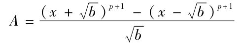
（显然这个表达式不含无理数）无论x取什么（整数）值，总可被p整除．因为考察A的展开式的系数，显然可知其中从第二项到倒数第二项（包括在内）都被p整除，因而A≡2（p+1）（xp+xb（p-1）/2）（mod p）．但因为b是p的非剩余，所以我们有b（p-1）/2≡-1（mod p）（见第106节）；但xp总≡x（见前章），因此A≡0．（证完）
Ⅱ．在同余式A≡0（mod p）中不定元x的最高次数是p，且数0，1，2，…，p-1都是根．现在设e是p+1的一个因子．表达式
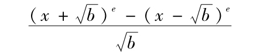
（我们将它记作B）是有理数，不定元x的最高次数是e-1，因此由分析学基本结果可知A被B（按不定元）整除．现在我断言：存在x的e-1个这样的值，将它们代入B，可使p整除B．这是因为令A≡BC，我们发现在C中x的最高次数是p-e-1，因而同余式C≡0（mod p）有不多于p-e-1个根．并且由此推出0，1，2，3，…，p-1中其余e-1个数将是B≡0的根．
Ⅲ．现在设p是5n+4形式的，e=5，b是p的非剩余，并且选取数a使得
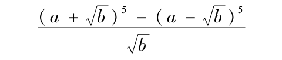
被p整除．但这个表达式
=10a4+20a2b+2b2=2〔（b+5a2）2-20a4〕．
于是我们得知（b+5a2）2-20a4也被p整除，亦即20a4是p的剩余；但因为4a4是不被p整除的剩余（因为易见a不能被p整除），所以5也是p的剩余．（证完）
因此本节开始所宣布的定理显然是一般地正确的．
我们注意这两种情形的证明都属于拉格朗日（Novi.mém Acad.Berlin，1775）．
▶124.用类似的方法可以证明：-7是任何是7的非剩余的数的非剩余．通过归纳我们可以得到结论：-7是任何是7的剩余的素数的剩余．
但迄今还没有人严格地证明它．对于那些4n-1形式的7的剩余证明是容易的；因为应用前节方法可以证明+7总是这样的素数的非剩余，因而-7是它们的剩余．但用这种方法我们所获不多，因为其余情形不可能用同样的方法处理．有一种情形可以用第119节和第123节中的方式解决．如果p是7n+1形式的素数，而a对于模p属于指数7，那么易见
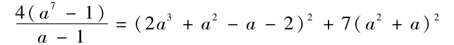
被p整除，因而-7（a2+b2）2是p的剩余．但（a2+b2）2作为平方数，是p的剩余，且不被p整除；这是因为我们已设a属于指数7，所以它既不可能≡0，也不可能≡-1（mod p），亦即a和a+1（因而平方数a2（a+1）2）不能被p整除．于是7也是p的剩余．（证完）但7n+2或7n+4形式的素数不可能用到目前为止我们所使用的任何方法来处理．不过拉格朗日第一个在他同一个著作中揭示了这个证明．在后面第7章中我们将证明表达式4（xp-1）/（x-1）总可以归结为X2pY2的形式（此处当p是4n+1形式的素数时取负号，当p有4n+3形式时取正号）．在这个表达式中X，Y是x的有理式，避免了分式．除p=7外拉格朗日没有完成这个分析．
▶125.因为以前的方法不足以给出一般性证明，所以我们现在给出一个这样的方法．我们从这样一个定理开始，它的证明长期使我们困惑，虽然初看起来它似乎是显然的，以至许多作者相信不需要证明．这个定理如下：除非零平方数外，每个数都是某个素数的非剩余．但因为我们只需应用这个定理作为证明其他结果的辅助命题，所以我们在此仅仅说明有此需要的那些情形．其他情形将在以后研究．因此我们来证明任何4n+1形式的素数，无论它取正号或负号，都是某个素数的非剩余[17]，并且实际上（如果它＞5）是比它小的某个素数的非剩余．
首先，当p是4n+1形式的素数（＞17但-13N3，-17N5）[18]时，它取负号，令2a是大于
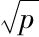
且最接近于它的偶数，那么4a2将始终＜2p，或者4a2-p＜p．但4a2-p是4n+3形式的，而p是4a2-p的二次剩余（因为p≡4a2（mod 4a2-p））；并且若4a2-p是素数，则-p是非剩余，因为不然4a2-p的某个因子就必然是4n+3形式的；并且因为+p是剩余，所以-p是非剩余．（证完）对于正素数，我们区分两种情形．首先设p是8n+5形式的素数．令a是任何一个＜
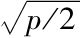
的正数．那么8n+5-2a2是8n+5或8n+3形式的正数（依a是偶数或奇数），因而必定被某个8n+3或8n+5形式的素数整除，这是因为8n+1和8n+7形式的数之积不可能有8n+3或8n+5的形式．设在此用q表示它，则我们有8n+5≡2a2（mod q）．但2是q的非剩余（见第112节），因而2a2和8n+5也是q的非剩余[19]．（证完）▶126.我们没有如此显然的方法去证明任何8n+1形式且取正号的素数总是某个比它小的素数的非剩余．但因为这个定理非常重要，所以我们不能省略它的严格证明，虽然证明有点长．我们开始证明如下：
引理 设我们有两组数
A，B，C，…，（Ⅰ） A′，B′，C′，…（Ⅱ）
（不管每组中项数相同还是不同，这是无关紧要的事）如此地排列：若p是素数或素数幂，它整除第二组数中的一项或多项，则在第一组数中至少存在同样多项被p整除．那么，我断言：（Ⅰ）中所有数之积可被（Ⅱ）中所有数之积整除．
例 设（Ⅰ）由数12，18，45组成；（Ⅱ）由数3，4，5，6，9组成，那么如果我们逐次取数2，4，3，9，5，可以发现在（Ⅰ）中存在2，1，3，2，1项，及在（Ⅱ）中存在2，1，3，1，1项，它们分别被所取的这些数整除；并且（Ⅰ）中所有项之积=9720，它可被（Ⅱ）中所有项之积3240整除．
证 设（Ⅰ）组中各项之积=Q，（Ⅱ）组中各项之积=Q′．显然Q′的任何素因子也是Q的素因子．现在我们证明Q′中任何素因子出现的次数至少等于它在Q中出现的次数．设这样一个因子是p，并设在组（Ⅰ）中有a项被p整除，b项被p2整除，c项被p3整除，…．类似地在组（Ⅱ）中分别是a′，b′，c′，…．在Q中，p出现的次数是a+b+c+…，在Q′中，则是a′+b′+c′+…．但a′必然不大于a，b′不大于b，…（依假设）；因而a′+b′+e′+…必不＞a+b+c+…．于是没有一个素数在Q′中的次数比在Q中的高，从而Q′整除Q（见第17节）．（证完）
▶127.引理 在级数1，2，3，4，…，n中可被数h整除的数的个数不可能多于在相同项数的级数a，a+1，a+2，…，a+n-1中被数h整除的数的个数．
我们毫无任何困难地看到，如果n是h的倍数，那么每个级数中有n／h项被h整除；如果n不是h的倍数，那么令n=eh+f，其中f＜h．于是在第一个级数中有e项被h整除，在第二个级数中则有e或e+1个这样的项．
作为它的推论，我们得到形数理论中的一个著名命题，即
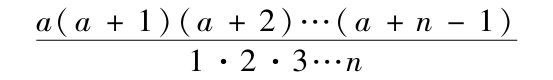
总是一个整数．但据我所知，至今没有一个人给出它的直接证明．
最后，这个引理可以更一般地表述如下：
在级数a，a+1，a+2，…，a+n-1中对于模h与任何给定的数r同余的项的个数不小于级数1，2，3，…，n中可被h整除的项的个数．
▶128.定理 设a是任何8n+1形式的数；p是某个与a互素且以+a为剩余的数；还设m是一个任意数，那么，我断言：级数
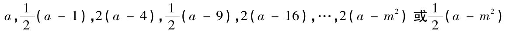
（依m是偶数或奇数）中，可被p整除的项的个数至少等于级数
1，2，3，…，2m+1
中被p整除的项的个数．
我们将第一个级数记为（Ⅰ），第二个级数记为（Ⅱ）．
证 Ⅰ.当p=2时，在（Ⅰ）中除第一项外所有项（即共m项）都可被p整除；在（Ⅱ）中有相同个数的项可被p整除．
Ⅱ．设p是奇数或一个奇数的2倍或4倍，并设a≡r2（mod p）．那么在级数-m，-（m-1），-（m-2），…，+m［它的项数与级数（Ⅱ）相同，我们称它为（Ⅲ）］中对于模p与r同余的项的个数等于级数（Ⅱ）中被p整除的项的个数（见前节）．但在它们中不可能存在一对数只相差符号[20]．并且它们每个在级数（Ⅰ）中都有一个对应的被p整除的值．这意味着如果±b是级数（Ⅲ）中对于p与r同余的项，那么a-b2被p整除．因而若b是偶数，则级数（Ⅰ）的项2（a-b2）被p整除．但若b是奇数，则项（a-b2）/2被p整除；这是因为，由于a-b2可被8整除（由假设，a是8n+1形式的，b2作为奇数的平方是同样形式的，而它们的差是8n形式的），而p至多被4整除，从而（a-b2）/p显然是一个偶数．于是我们得到结论：级数（Ⅰ）中被p整除的项的个数等于级数（Ⅲ）中对于p与r同余的项的个数，亦即等于或大于级数（Ⅱ）中被p整除的项的个数．（证完）
Ⅲ．设p是8n形式的，并且a≡r2（mod 2p）．依假设a是p的剩余，易见也是2p的剩余．于是级数（Ⅲ）中对于p与r同余的项的个数至少等于级数（Ⅱ）中被p整除的项的个数，并且它们所有的值不相等．但对于它们每个在级数（Ⅰ）中存在被p整除的对应项．因为如果+b或-b≡r（mod p），那么我们将有b2≡r2（mod 2p）[21]，并且项（a-b2）/2可被p整除．因此级数（Ⅰ）中可被p整除的项的个数至少等于级数（Ⅰ）中这种项的个数．（证完）
▶129.定理 如果a是8n+1形式的素数，那么必定存在某个小于2 a+1的素数以a为非剩余．
证 如果可能，我们设a是所有小于2
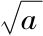
+1的素数的剩余．那么a将是所有小于2 +1的合数的剩余（见第105节中判断一个给定数是否是一个合数的剩余的法则）．令最接近且小于的数=m．那么在级数（Ⅰ） a，
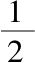
（a-1），2（a-4），（a-9），…，2（a-m2）或（a-m2）中被某个小于2
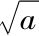
+1的数整除的项的个数等于或大于在（Ⅱ） 1，2，3，4，…，2m+1（见前节）
中有同样性质的项的个数．并且由此推出（Ⅰ）中所有项之积可被（Ⅱ）中所有项之积整除（见第126节）．但前—个积等于乘积a（a-1）（a-4）…（a-m2）或此乘积的一半（依据m是偶数或奇数）．因而乘积a（a-1）（a-4）…（a-m2）必被（Ⅱ）中所有项之积整除，并且因为所有这些项与a互素，所以这个乘积去掉因子a后也与a互素．但（Ⅱ）中所有项之积可表示为
（m+1）［（m+1）2-1］［（m+1）2-4…］［（m+1）2-m2］，
因而
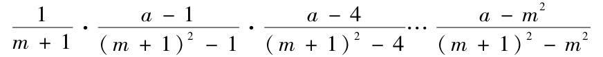
是一个整数，虽然上式是小于1的分数（这是因为，由于
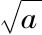
必是无理数，所以m+1＞，从而（m+1）2＞a）之积．因此我们的假设不可能成立．（证完）现在因为a必定＞9，所以我们有2
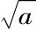
+1＜a，从而存在一个素数＜a以a为非剩余．▶130.现在我们来严格地建立，任何一个取正号或负号的4n+1形式的素数是某个小于它的素数的非剩余，我们来进行更精确和更一般的素数比较，其中一个是另一个的剩余或非剩余．
我们前面已经证明-3和+5是所有分别是3和5的剩余或非剩余的素数的剩余或非剩余．
通过归纳可以发现数-7，-11，+13，+17，-19，-23，+29，-31，+37，+41，-43，-47，+53，-59等等分别是所有取正号是这些素数的剩余或非剩余的那些素数的剩余或非剩余．这个归纳可以借助表2容易地完成．
可以看到在这些素数中4n+1形式的是正的，4n+3形式的是负的．
▶131.我们马上就要证明我们通过归纳发现的结果在一般情形是正确的，但做这之前，我们有必要揭示这个定理（设它成立）的所有推论：
如果p是4n+1形式的素数，那么+p是任何取正号是p的剩余或非剩余的素数的剩余或非剩余．如果p是4n+3形式的，那么-p也有同样的性质．
因为几乎关于二次剩余可说的每个结果都基于这个定理，从现在起我们称它为基本定理应当是可以接受的．
为使我们的推理尽可能地简明，我们用字母a，a′，a″等表示4n+1形式的素数，用字母b，b′，b″等表示4n+3形式的素数；任何4n+1形式的数将用A，A′，A″等表示，任何4n+3形式的数将用B，B′，B″等表示；最后，字母R放在两个量之间表示前者是后者的剩余，而字母N之意义则相反．例如，+5R11，±2N5表示+5是11的剩余，+2或-2是5的非剩余．现在借助第11节的定理我们容易从基本定理推出下列命题[22]
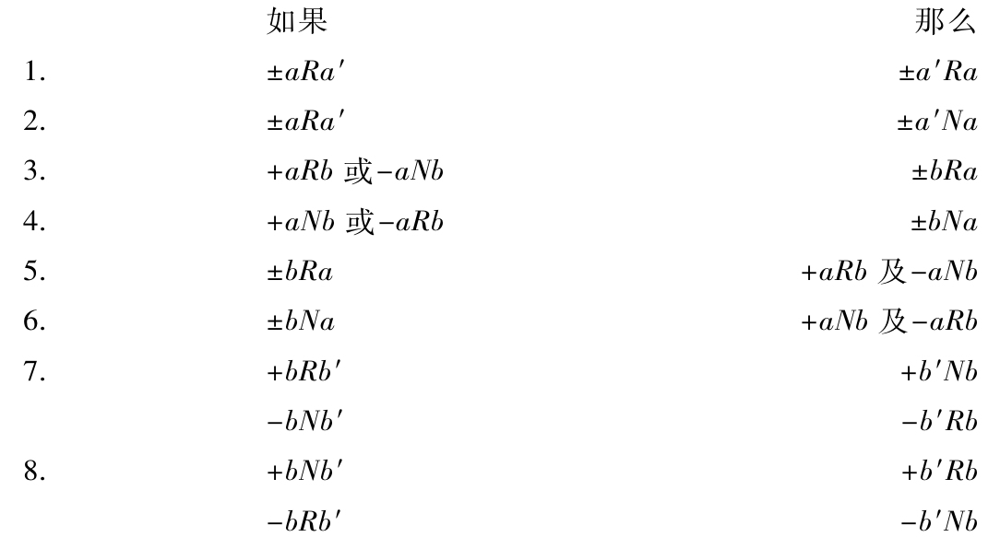
▶132.这个表包含了当两个素数可比较时的所有情形；下表是关于任意数的，但它们的证明不够显然．
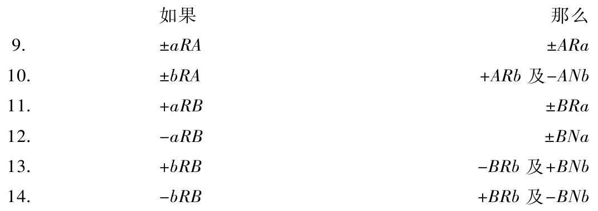
因为同样的原理导致所有这些命题的证明，所以我们不必给出所有证明．我们给出命题9的证明作为例子就足够了．首先我们注意任何4n+1形式的数或者没有4n+3形式的因子，或者有2个或4个等等这样的因子，亦即这样的因子（包括它们相等的情形）个数总是偶数；并且任何4n+3形式的数含有奇数个4n+3形式的因子（亦即是1个，3个或5个等等），而4n+1形式的因子的个数仍然是不确定的．
命题9可如下地证明．设A是素因子a′，a″，a，…，b，b′，b″，…之积；因子b，b′，b″，…的个数是偶数（或者它们不出现，也将此归结为这种情形）．现在如果a是A的剩余，那么它也是所有因子a′，a″，a，…，b，b′，b″，…的剩余，由前节命题1，3，每个这些因子是a的因而也是乘积A及-A的剩余．并且如果-a是A的剩余，那么正是由于这个事实它也是所有因子a′，a″…，b，b′，…的剩余；a′，a″，…中每个数是a的剩余，b，b′，…中每个数是非剩余．但因为后者个数是偶数，所以它们的乘积即A是a的剩余，因而-A也是a的剩余．
▶133.我们现在开始更一般的研究．考虑任何两个互素的奇数，将它们记做P和Q．我们不考虑符号将P分解为素因子之积，并用p表示以Q为非剩余的素因子的个数．任何一个以Q为非剩余的素数在P的因子中出现多少次就计多少次．类似地，设q是以P为非剩余的Q的素因子的个数，数p，q将会有某种依赖于数P，Q的性质的相互关系．这就是，若p，q之一是偶数或奇数，则数P，Q的形式将指出另一个数是偶数还是奇数．我们用下表显示这个关系．
当P，Q具有下列形式，p，q将同为偶数或同为奇数：
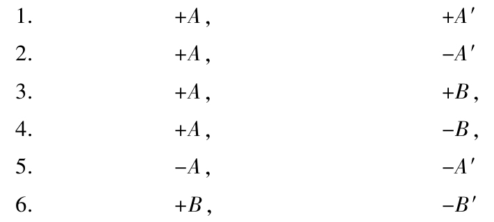
另一方面，当P，Q具有下列形式，p，q将一个为偶数而另一个为奇数：
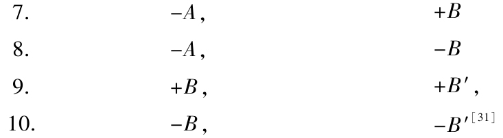
例 设给定的数是-55和+1197，这是第4种情形；1197是55的一个素因子即5的非剩余．但-55是1197的三个素因子即3，3，19的非剩余．
如果P和Q是素数，这些命题就归结为我们在第131节中考虑过的命题．这里p和q不能大于1，因而当p是偶数时它必然=0；亦即Q是P的剩余．但当p是奇数时，Q将是P的非剩余，并且反过来也对．因而若用a，b代替A，B，那么从第8种情形可推出：如果-a是b的剩余或非剩余，则-b是a的非剩余或剩余，这与第131节的情形3和情形4相一致．
一般地Q不可能是P的剩余，除非p=0；因此如果p是奇数，那么Q一定是P的非剩余．
前节的命题可以毫无困难地从这个事实推出．
这种一般表示显然要比无效的推测多，因为没有它基本定理的证明将是不完整的．
▶134.我们现在来推导这些命题．
Ⅰ．和以前一样，我们忽略符号将P分解为素因子之积．设无论用什么方法将Q分解因子，但在此要考虑Q的符号，现将前者的每个因子与后者的每个因子加以组合．那么，若用s表示所有这种组合的个数：其中Q的因子是P的因子的非剩余，则p和s或者都是偶数，或者都是奇数．设P的素因子是f，f′，f″，…．并且在Q所分解成的那些因子中，有m个是f的剩余，m′个是f′的剩余，m″个是f″的剩余，…．那么显然s=m+m′+m″+…，并且p表示m，m′，m″，…中奇数的个数．于是当p是偶数时s是偶数，当p是奇数时s为奇数．
Ⅱ．无论怎样将Q分解因子这都是一般地正确的．现在考虑特殊情形．对第一种情形，设其中一个数，P是正的，而另一个，Q是+A或-B形式．将P，Q作素因子分解，P的每个因子取正号，Q的每个因子依它们有形式a或b而取正号或负号；显然Q将有+A或-B形式，合乎要求．将P的每个因子与Q的每个因子加以组合，并如前用s表示Q的因子是P的因子的非剩余的那种组合的个数．但由基本定理可推出这些组合必定是完全一样的，所以s=t．最后，从我们刚证明的结果可知p≡s（mod 2），q≡t（mod 2），因而p≡q（mod 2）．
于是我们得到第133节中的命题1，3，4和6．
其他的命题可以用类似的方式直接证明，但它们需要一种新的考虑；用下列方式容易从前节结果推出它们．
Ⅲ．我们仍然用P，Q表示任何互素的奇数，p，q分别表示P的以Q为非剩余的素因子个数以及Q的以P为非剩余的素因子个数．还令p′是P的以-Q为非剩余的素因子个数（若Q是负的，则显然-Q是正的）．现在将P的所有素因子分为4类：
1）以Q为剩余的形式a的因子．
2）以Q为剩余的形式b的因子；设其个数是χ．
3）以Q为非剩余的形式a的因子；设其个数是ψ．
4）以Q为非剩余的形式b的因子；设其个数是ω
易见有p=ψ+ω，p′=χ+ψ．
现在当P是+A形式时，χ+ω和χ-ω是偶数；因而p′=p+χ-ω≡p（mod 2）．当P是±B形式时，那么我们由类似的计算发现数p，p′对于模2不同余．
Ⅳ．让我们将此结果应用于单个情形．设P和Q是+A形式的．由命题1，我们有p≡q（mod 2）；但p′≡p（mod 2），因而也p′≡q（mod 2）．这就是命题2．类似地，如果P是-A形式的，Q是+A形式的，那么由刚才所见的命题2，我们有p≡q（mod 2）；于是因为p′≡p，我们得到p′≡q．因此命题5得证．
同样地命题7可由命题3推出；命题8可由命题4或命题7推出；命题9可由命题6推出；命题10可由命题6推出．
▶135.在前节我们没有证明第133节的命题，但我们仍然要基于基本定理的正确性证明它们成立．显然，依据我们所用的方法，即使基本定理并不一般地成立而仅仅对它们中这些进行比较的数的所有素因子成立，那么这些命题对于数P，Q也是正确的．现在我们来进行基本定理的证明．我们以下列表述作为开始：
我们说基本定理正确到某个数M，如果它对任何两个都不大于M的素数正确．
如果我们说第131，第132及第133节的定理正确到某项，也应该按同样的方式来理解．如果基本定理正确到某项，那么显然这些命题也正确到同样的项．
▶136.通过归纳容易证实基本定理对较小的数正确，因而界限可以确定到确实应用到的程度．我们假设这个归纳已经完成；我们已经达到什么程度是无关紧要的事．比如证实它达到数5就够了，因为+5N3，±3N5，所以这通过单个观察就可做到．
现在如果基本定理并不一般地正确，那么存在某个界限T，直到它定理是正确的，但到下一个较大的数T+1就不正确．这可同样地说成存在两个素数，其中较大的一个是T+1，使得在一起比较时它们与基本定理矛盾．然而它蕴涵其他任何一对素数仅当它们都小于T+1时才符合定理的要求．由此可知第131，第132和第133节的命题也正确到T．我们现在来证明这个假设将导致矛盾．存在我们必须按照T+1及可能有的小于T+1的素数的不同形式来加以区分的各种情形．我们用p表示素数．
当T+1和p都是4n+1形式时，基本定理可以在两种方式下是错误的，亦即如果我们同时有
或者 ±pR（T+1）并且 ±（T+1）Np，
或者 ±pN（T+1）并且 ±（T+1）Rp．
当T+1和p都是4n+3形式时，基本定理是错误的，如果我们同时有
或者 +pR（T+1）并且 -（T+1）Np，
［或者，等价地， -pN（T+1）并且 +（T+1）Rp，］
或者 +pN（T+1）并且 -（T+I）Rp．
［或者，等价地， -pR（T+1）并且 +（T+1）Np．］
当T+1是4n+1形式，而p是4n+3形式时，基本定理是错误的，如果我们有
或者 ±pR（T+1）并且 +（T+1）Np［或-（T+1）Rp］，
或者 ±pN（T+1）并且 -（T+1）Np［或+（T+1）Rp］.
当T+1是4n+3形式，而p是4n+1形式时，基本定理是错误的．如果我们有
或者 +pR（T+1）［或-pN（T+1）］并且 ±（T+1）Np，
或者 +pN（T+1）［或-pR（T+1）］并且 ±（T+1）Rp．
如果能够证明这8种情形没有一个成立，那么基本定理的正确性必然同样是不受限制的．我们现在继续进行论述，但因为其中一些情形与其他情形有关，所以我们不能保持上面用来列举它们的顺序．
▶137.第一种情形．当T+1是4n+1（=a）形式，而p是同样形式时，我们不可能有±pRa及±aNp，或者若±pRa则我们不可能有±aNb．
设+p≡e2（mod a），其中e是偶数且＜a（这总是可能的）．我们可以区分两种情形．
Ⅰ．当p不能整除e时，令e2=p+af．这里f是4n+3形式（B形式）的正数，＜a且不被p整除．还有e2≡p（mod f），亦即pRf，因而由第132节的命题11得到±fRp（因为p，f＜a）．但我们也有afRp，因而±aRp．
Ⅱ．当p能整除e时，令e2=gp及e2=p+aph或pg2=1+ah．那么h是4n+3形式（B形式）的，且与p及g2互素．我们还有pg2Rh，因而pRh，并且由此得（见第132节的命题11）±hRp．但因为-ah≡1（mod p），所以我们也有-ahRp；于是aRp．
▶138.第二种情形．当T+1是4n+1（=a）形式，而p是4n+3形式，并且±pR（T+1）时，我们不可能有+（T+1）Np或-（T+I）Rp．这是上面的第5种情形．
同上，我们设e2=p+fa，并且e是＜a的偶数．
Ⅰ．当p不能整除e时，p也不能整除f．还有，f是4n+1形式（A形式）的＜a的正数；但+pRf，因而+fRp（见第132节的命题10）．但也有+faRp，因此+aRp或-aNp．
Ⅱ．当p能整除e时，令e=pg及f=ph．因而g2p=1+ha．于是h是4n+3形式（B形式）的正数，并且与p和g2互素．另外，+g2pRh，因而+pRh；于是得到-hRp（见第132节的命题13）．但我们有-haRp，因此+aRp及-aNp．
▶139.第三种情形，当T+1是4n+1（=a）形式，而p是同样形式，并且±pNa时，我们不可能有±aRp（这是上面的第2种情形）．
取任何小于a且以+a为非剩余的素数．我们已经证明这样的素数存在（见第125和129节）．但我们在此必须依据这个素数是4n+1或4n+3形式分别考虑两种情形，因为我们没有证明存在每种形式的这样的素数．
Ⅰ．设这个素数是4n+1形式的并且=a′．那么我们有±a′Na（见第131节），因而±a′pRa．现在令e2≡a′p（mod a），且e是＜a的偶数．那么我们还要区分4种情形．
1）当e不被p或a′整除时，令e2=a′p±af，此处无论选取哪个符号要使f是正数．那么我们有f＜a，与a′及p互素，并且双重号中取正号时是4n+3形式的，取负号时是4n+1形式的．为简明起见，我们用［x，y］表示以x为非剩余的数y的素因子的个数．那么我们有a′pRf，因而［a′p，f］=0．于是［f，a′p］是偶数（见第133节的命题1，3），亦即它或者=0，或者=2．所以f是每个数a′，p的剩余，或者都不是这两个数的剩余．前一情形是不可能的，这是因为±af是a′的剩余，且±aNa′（由假设），因而±fNa′．于是f必然是每个数a′，p的非剩余．但因为±af Rp，所以我们有±aNp．（证完）
2）当e被p整除但不被a′整除时，令e=gp及g2=a′±ah，其中符号的确定要使h是正数．那么我们有h＜a，与a′，g和p互素，并且双重号中取正号时是4n+3形式的，取负号时是4n+1形式的．如果我们用p及a′乘方程g2p=a′±ah，那么容易推出
pa′Rh（α）；±ahpRa′（β）；aa′hRp（γ）．
由（α）可得［pa′，h］=0，因而［hp，a′］是偶数（见第133节的命题1，3），亦即h是两个数p，a′的非剩余，或者都不是它们的非剩余，在前一情形，由（β）得到±apNa′，并且因为由假设±aNa′，所以我们有±pRa′．于是由基本定理（它对数p，a′有效，因为这它们小于T+1），我们有±a′Rp．现在hNp，因而由（γ）得到±aNp．（证完）在后一情形，由（β）推出±apRa′，所以±pNa′，±a′Np．但因为hRp，我们从（γ）得到±aNp．（证完）
3）当e被a′整除但不被p整除时，对此情形的证明几乎与前一情形一样，并且对任何理解了这个证明的人都不会有困难．
4）当e不被a′也不被p整除时，则也不被乘积a′p整除（我们已经假设a′，p不相等，因为不然假设aNa′将蕴含aNp）．令e=ga′p及g2a′p=1±ah．那么我们有h＜a，与a′及p互素，并且双重号中取正号时是4n+3形式的，取负号时是4n+1形式的．由此方程容易推出
a′pRh（α）；±ahRa′（β）；±ahRp（γ）．
这里的（α）与2）中的（α）相同，由它可得相同结果．这就是，我们有或者hRp，hRa′，或者hNp，hNa′．但在前一情形由（β）我们得aRa′，这与假设矛盾．因而hNp，而且由（γ）还有aNp．
Ⅱ．设这个素数是4n+1形式的，则证明和上面非常类似，看来不必作多余的重复．我们仅需注意对于愿意自行完成这个证明的读者（我们强烈地建议这样做），我们仅提醒：得到方程e2=bp±af（b表示素数）后要预先分别考虑每种符号．
▶140.第四种情形．当T+1是4n+1（=a）形式，而p是4n+3形式，并且±pNa时，我们不可能有+aRp或-aNp（这是上面的第6种情形）．
因为它的证明恰好与第三种情形类似，为了简明我们将它省略．
▶141.第五种情形．当T+1是4n+3（=b）形式，而p是同样形式并有+pRb或-bNp时，我们不可能有+bRp或-bNp（这是上面的第3种情形）．
令p≡e2（mod b），且e是＜b的偶数．
Ⅰ．当e不被p整除时，令e2=p+bf，此处，f是＜b的4n+3形式的正数，并且与p互素，还有pRf，因而-f Rp（见第132节的命题13）．于是因为+bfRp，我们得到-bRp及+bNp．（证完）
Ⅱ．当e能被p整除时，令e=pg及g2p=1+bh．那么h有4n+1形式且与p互素，还有p≡g2p2（mod h），因而pRh．由此我们有+hRp（见第132节命题10），并且因为-bhRp，得到-bRp及+bNp．（证完）
▶142.第六种情形．当T+1是4n+3（=b）形式，而p是4n+1形式，并且pRb时，我们不可能有±bNp（这是上面的第7种情形）．
证明从略，因为与前一情形完全相同．
▶143.第七种情形．当T+1是4n+3（=b）形式，而p是同样形式，并且+pNb或-pRb时，我们不可能有+bNp或-bRp（这是上面的第4种情形）．
令-p≡e2（mod b），其中e是小于b的偶数．
Ⅰ.当e不被p整除时，令-p=e2-bf，此处f是与p互素的4n+1形式的正数，并且小于b（因为e不大于b-1，p＜b-1，因而bf=e2+p＜b2-b，亦即f＜b-1）．此外，我们有-pRf，由此+fRp（见第132节的命题10）．并且因为bfRp，所以我们得到+bRp或-bNp．
Ⅱ.当e能被p整除时，令e=pg及g2p=-1+bh．那么h是4n+3形式的小于b的正数，并且与p互素，我们还有-pRh，因而+hRp（见第132节的命题14）．并且因为bhRp，所以可推出+bRp或-bNp．（证完）
▶144.第八种情形．当T+1是4n+3（=b）形式，而p是4n+1形式并有+pNb或-pRb时，我们不可能有±bRp（这是上面的最后一种情形）．
证明与前一情形相同．
▶145.在上面的证明中我们总是取e为偶数（见第137和144节）；取奇数值也是可以的，但这样将会引起很多的差别（喜爱这个研究的读者将会发现自行完成这个工作是非常有益的）．此外，与剩余+2和-2有关的定理也应被包含在内．但因为我们的证明没有导致这些定理，所以我们将用新的方法给出它们，而且这种方法并非不屑一顾，因为它比我们以前证明±2是任何8n+1形式的素数的剩余所用的方法更直接，我们将认为其他情形（关于8n+3，8n+5，8n+7形式的素数）的结果已经用上面的方法建立，并且（关于8n+1形式的素数的）定理仅仅通过归纳建立，下面的考察将这个归纳上升为必然的结果．
如果±2不是所有8n+1形式的素数的剩余，那么令以±2为非剩余的最小素数=a，于是定理对所有小于a的素数成立．现在取某个＜a／2的以a为非剩余的素数（由第129节可知这显然可以做到）．令这个数=p，并且由基本定理有PNa．因而±2pRa．于是若令e2≡2p（mod a），则e是＜a的奇数，现在必须区分两种情形．
Ⅰ.当p不能整除e时，令e2=2p+aq，其中q是8n+7或8n+3形式（依p是4n+1或4n+3形式）的＜a的正数，并且不能被p整除．现在q的所有素因子可分为4类：e是8n+1形式的，f是8n+3形式的，g是8n+5形式的，h是8n+7形式的；设第一类因子之积是E，第二类，第三类，第四类因子之积分别是F，G，H．[23]首先考虑p是4n+1形式，q是8n+7形式的情形，显然我们有2RE，2RH，因而有pRE，pRH，最终有ERp，HRp．此外，2是任何8n+3或8n+5形式的因子的非剩余，因而也是p的非剩余；于是这样的因子是p的非剩余，并且最后得知：若f+g是偶数，则FG是p的剩余，若f+g是奇数，则它是p的非剩余．但f+g不可能是奇数；因为无论e，f，g，h各自是什么形式的，若f+g是奇数，则在每个情形EFGH即q将是8n+3或8n+5形式的，而这与假设矛盾．于是我们得到FGRp，EFGHRp，即qRp，但因aqRp，所以这蕴含aRp，这与假设矛盾，其次，当p是4n+3形式时，我们可以类似地证明pRE，因而ERp，-pRF，于是FRp；因为g+f是偶数，我们得到GHRp，从而最后得到qRp，aRp，这与假设矛盾．
Ⅱ.当p能整除e时，可以类似地进行证明．熟练的数学家（这节是为他们而写）能够毫无困难地完成它．为了简明我们从略．
▶146.由基本定理及关于-1和±2的剩余的命题，总可以确定一个给定的数是否是任何其他给定的数的剩余或非剩余．但为了将解决问题所必需的结果汇集在一起，重新叙述上面得到的结论是有益的．
问题．给定任意两个数P，Q，揭示Q是P的剩余还是非剩余．
解．Ⅰ.令P=aαbβcγ…，其中a，b，c，…是不相等的正素数（因为显然我们必须考虑P的绝对值）．为了简明，本节中我们将简略地说两个数x，y的关系，这意味着前者x是后者y的剩余或非剩余．于是Q，P的关系依赖于Q，aα；Q，bβ；Q，cγ；…的关系（见第105节）．
Ⅱ.为了确定Q，aα（以及Q，bβ；等等）间的关系，必须区分两种情形．
1.当a整除Q时，令Q=Q′ae，其中a不能整除Q′．那么若e=α或e＞α，则我们有QRaα；但若e＜α且是奇数，则我们有QNaα；若e＜α且是偶数，则Q与aα间有和Q′与aα-e间相同的关系．这归结为下列的情形：
2.当α不能整除Q时，我们必须再区分两种情形．
（A）当a=2．那么当α=1时我们总有QRaα；当α=2时则要求Q是4n+1形式的；而当α=3或＞3时，Q必须是8n+1形式的．若这个条件成立，则有QRaα．
（B）当a是任何其他的素数，那么Q与aα间的关系和它与a间的关系相同（见第101节）．
Ⅲ.我们下面研究任意数Q与（奇）素数a间的关系．当Q＞a时，Q用它对于模a的最小正剩余来代替[24]．它及Q与a有相同的关系．
将Q或代替它的数分解为它的素因子p，p′，p″，…，当Q是负数时要算上因子-1．那么显然Q与a的关系依赖于单个数p，p′，p″，…与a的关系．这就是说，若这些因子中存在2m个a的非剩余，则我们有QRa；若它们中存在2m+1个a的非剩余，则有QNa．因为易见若因子p，p′，p″，…中有一对，4个，6个，或一般地2k个相等，则毫无问题可将它们略去．
Ⅳ.如果-1和2出现在因子p，p′，p″，…中，那么它们与a的关系可以由第108，第112，第113，第114诸节确定．其余的因子与a的关系取决于a与它们的关系（依基本定理及第131节的命题）．设p是它们中的一个，我们发现（就像当Q和a分别较大时处理它们那样地处理a，p）a和p之间的关系可以由第108~第114节来确定［只要a的最小剩余（mod p）不含奇素因子］，或者这个关系依赖于p与小于p的素数的关系，这对于其他因子p′，p″，…同样成立．连续实施这个运算我们最终得到其关系可以应用第108~第114节命题来确定的那些数．通过例子可对此看得更清楚．
例 我们来求数+453与1236的关系：1236=4·3·103；由Ⅱ.2（A）得+453R4；由Ⅱ.1得+453R3．现在来揭示+453与103的关系．这与+41［≡453（mod 103）］与103的关系是一样的；或与+103与41（依基本定理）或-20与41的关系一样．但-20R41；且因-20=-1·2·2·5，有-1R41（见第108节）以及+5R41，于是41≡1，因而它是5的剩余（依基本定理）．由此可知+453R103，因而+453R1236．确实，453≡2972（mod 1236）．
▶147.如果给定一个数A，那么可以证明某个公式包含所有以A为剩余且与A互素的数，或者所有可能是x2-A形式的数的因子的数（这里x2是不定元的平方）[25]．为简明计，我们仅考虑与A互素的奇因子，因为所有其他因子容易归结到这些情形．
首先令A或者是4n+1形式的正素数，或者是4n-1形式的负素数．那么依据基本定理所有是A的剩余的素数（取正号）是x2-A的因子；并且所有是A的非剩余的素数（除去2，因为它总是一个因子）是x2-A的非因子．设A的所有小于A的剩余（包括0在内）记作r，r′，r″，…，非剩余记作n，n′，n″，…．那么任何含在Ak+r，Ak+r′，Ak+r″，…形式之一中的素数是x2-A的因子；但任何含在Ak+n，Ak+n′，Ak+n″，…形式之一中的素数是x2-A的非因子．在这些公式中k是未定整数．我们称第一个集合为x2-A的因子形式，第二个集合为它的非因子形式．每个集合的成员个数是（A-1）/2．此外，如果C是奇合数，并且ARB，那么B的所有素因子都含于上面形式之一，因而B也是如此．于是含在非因子形式中的任何奇数是形式x2-A的非剩余，但这个定理不可逆；因为若B是形式x2-A的一个奇合数非因子，那么B的素因子中有一些将是非因子，并且它们中将有一个偶数，但B本身是在因子形式中找到的（见第99节）．
例 对于A=-11，x2+11的因子形式是11k+1，3，4，5，9；非因子形式是11k+2，6，7，8，10．于是-11是所有含在后一形式中的奇数的非剩余，而所有素数的剩余属于前一形式．
无论A是什么样的数，对于x2-A的因子和非因子我们都有类似的形式．显然，我们仅需考虑A的这些值，它们不能被某个平方数整除；因为如果A=a2A′，那么x2-A的所有因子[26]也都是x2-A′的因子，并且对于非因子也是如此．但我们必须区分三种情形：（1）当A是+（4n+1）或-（4n-1）形式；（2）当A是-（4n+1）或+（4n-1）形式；（3）当A是±（4n+2）形式，亦即是偶数．
▶148.第一种情形，A是+（4n+1）或-（4n-1）形式，将A分解为素因子，4n+1形式的因子取正号，4n-1形式的因子取负号（所有因子之积=A）．设这些因子是a，b，c，d，…．现在将所有小于A且与A互素的数分为两类．第一类中是所有这样的数：它们不是a，b，c，d，…中任何一个数的非剩余，或是其中2个数的，或是其中4个数的，或一般地，是其中偶数个数的非剩余；第二类中是所有这样的数：它们是a，b，c，d，…中任何一个数的，或其中3个数的，或一般地，其中奇数个数的非剩余，将前者记为r，r″，r″，…，后者记为n，n′，n″，…．那么形式Ak+r，Ak+r′，Ak+r″，…是x2-A的因子形式，形式Ak+n，Ak+n′，…是x2-A的非因子形式（亦即每个素数除去2依据它含在前一形式或后一形式之一中，分别是x2-A的因子或非因子）．因为如果p是正素数，并且是a，b，c，…之一的剩余或非剩余，那么这个数就是p的剩余或非剩余（依基本定理）．所以如果在数a，b，c，…中存在m个以p为非剩余的数，那么同样的数将是p的非剩余，于是若p含在前一种形式之一中，则m是偶数，且ARp．但若p含在后一种形式之一中，则m是奇数，并且ANp．
例 设A=+105=（-3）（+5）（-7）．那么数r，r′，r″，…是1，4，16，46，64，79（它们不是3，5，7中任一数的非剩余）；2，8，23，32，53，92（它们是数3，5的非剩余）；26，41，59，89，101，104（它们是数3，7的非剩余）；13，52，73，82，97，103（它们是数5，7的非剩余）．数n，n′，n″，…是11，29，44，71，74，86；22，37，43，58，67，88；19，31，34，61，76，94；17，38，47，62，68，83（其中最初6个是3的非剩余，其次的6个数是5的非剩余，接下来是7的非剩余，最后是同时是所有3个数的非剩余）．
由组合理论及第32和96节我们易见数r，r′，r″，…的个数
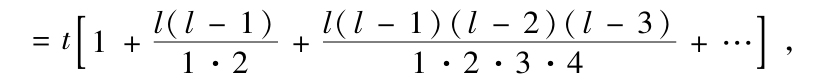
而n，n′，n″，…的个数
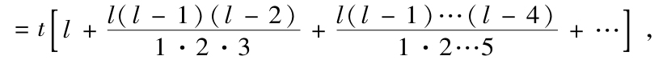
其中l由数a，b，c，…的个数确定；t=2-l（a-1）（b-1）（c-1）…，并且每个级数都延伸到它终止［有t个数是a，b，c，…的剩余，tl（l-1）/（1·2）个数是这些数中2个数的非剩余，等等，但为简明计没有给出更完整的展开式］．每个级数的和=2l-1 [27]．这就是说，前者由
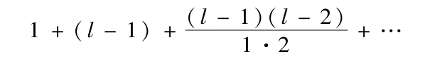
将其中第二项和第三项相加，第四项和第五项相加，…得到的，后者由同一个方程将其中第一项和第二项相加，第三项和第四项相加，…得到．因此x2-A的因子形式个数与非因子形式个数一样多，都等于（a-1）（b-1）（c-1）…/2．
▶149.我们可以一起考虑第二种情形和第三种情形．我们可将A表示为=（-1）Q，或=（+2）Q，或（-2）Q，其中Q是+（4n+1）或-（4n-1）形式的数，如同我们在上节考虑的那样．一般地令A=αQ，其中α=-1或α=±2．那么A是所有这种数的剩余：α和Q都是或都不是它的剩余；并且是所有这种数的非剩余：α和Q中仅有一个是它的非剩余．由此容易推导出x2-A的因子形式和非因子形式．若α=-1，则将所有小于4A且与它互素的数分为两类．含在x2-A的某个因子形式中同时是4n+1形式的数以及含在x2-A的某个非因子形式中同时是4n+3形式的数，放在第一类；所有其他的数放在第二类．令前一类中的数是r，r′，r″，…，后一类中的数是n，n′，n″，…，那么A是所有含在任何形式4Ak+r，4Ak+r′，4Ak+r″，…中的素数的剩余；以及所有含在任何形式4Ak+n，4Ak+n′，…中的素数的非剩余．
若α=±2，则将所有小于8Q且与它互素的数分为两类．放在第一类的是：含在x2-Q的某个因子形式中同时是8n+1，8n+7形式之一的数（当双重号取正号）或8n+1，8n+3形式之一的数（当双重号取负号）；以及含在x2-Q的某个非因子形式中同时是8n+3，8n+5形式之一的数（当双重号取正号）或8n+5，8n+7形式之一的数（当双重号取负号）．所有其他的数放在第二类．那么，若我们将前一类中的数记为r，r′，r″，…，后前一类中的数记为n，n′，n″，…，则±2Q是所有含在任何形式8Qk+r，8Qk+r′，…中的素数的剩余，以及所有含在任何形式8Qk+n，8Qk+n′，8Qk+n″，…中的素数的非剩余．并且易见在此x2-A的因子形式个数与非因子形式个数也是一样多．
例 用这个方法我们求出+10是所有含在任何一个40k+1，3，9，13，27，31，37，39形式中的素数的剩余，以及所有含在任何一个40k+7，11，17，19，21，23，29，33形式中的素数的非剩余．
▶150.这些形式有非常值得注意的性质，但我们仅指出其中一个．如果B是与A互素的合数，并且在它的素因子中有2m个含在x2-A的某个非因子形式中，那么B将含在x2-A的某个因子形式中；并且如果B的含在x2-A的某个非因子形式中的素因子的个数是奇数，那么B也含在一个非因子形式中．证明不难，我们从略．从所有这些结果可推出，不仅任何素数，而且任何与a互素且含在某个非因子形式中的奇合数本身也是非因子；因为这样的数的某个素因子必然是一个非因子．
▶151.基本定理肯定必须看作最机巧类型的命题之一．至今还没有人如我们上面那样简洁地给出它．更为令人惊讶的是，欧拉已经知道依赖于这个定理的其他命题，因而应当导致他发现它，他意识到存在包含x2-A形式的数的所有素因子的某种形式，以及包含同样形式的数的所有素非因子的形式，而且这两个集合互相排斥．另外他还知道找出这些形式的方法，但他试图对此加以证明时却归于徒劳，而他的成功仅仅在于给出了很大程度上接近于真理的通过归纳发现的结果．在题为“Novae demonstrationes circa divisores numerorum formae xx+nyy”的论文（他曾于1775年11月20日在彼得堡科学院宣读过，并在他死后发表[28]）中看出，他似乎相信他已经完全解决了问题．但他的论文潜藏着一个错误，因为他暗中预设了存在这样的因子和非因子形式[29]，并且不难由此发现它们的形式应该是什么样的．但他用来证明这个推测的方法看来并不合适，在另一篇论文De criteriis aequationis fxx+gyy=hzz uttumque resolutionem admittat necne”[30]（见Opuscula Analytica，I，其中f，g，h给定，x，y，z不定）中，他通过归纳发现如果方程对h的一个值s可解，那么它对任何对模4fg与s同余的其他值（只要它是素数）也可解．由这个命题就容易证明我们所说的那个推测．但这个定理的证明也使他的努力受挫[31]．这是不值得注意的，因为依我们的判断，它必须从基本定理出发．这个命题的正确性将由我们下一章中证明的结果自动地产生．
在欧拉之后，颇负盛名的拉格朗日在他的杰出的专著Recherches d′analyse indétérminée（Hist．Acad．Paris，1785）中致力于同一问题的研究．他基本上获得了与基本定理相同的结果．他证明了如果p，q是两个正素数，那么幂p（q-1）/2，q（p-1）／2分别对于模q，p的绝对最小剩余当p或q是4n+1形式时或者都是+1，或者都是-1；但当p和q都是4n+3形式时一个最小剩余是+1，另一个是-1．依据第106节，由此我们推出下列事实：当p或q是4n+1形式时，p对于q以及q对于p的关系（其意义按第146节理解）是相同的；当p和q都是4n+3形式时是相反的．这个命题包含在第131节的命题中，并且也可以从第133节的情形1，3，9推出；另一方面，基本定理也可以从它推出．拉格朗日也试图进行证明，因为它极为精巧，所以我们在下一章用一些篇幅论述它．但因为他预先假设了许多未加证明的结果（正如他所坦承的：“不过我们应当假定……”），其中有些至今尚未被任何人证明过，并且依我们的判断，其中有一些若不借助基本定理本身是不可能证明的，他所走的这条路看来终究要引向死胡同，所以我们的证明应当看作是第一个．以后我们将给出这个最重要的定理的两个其他的证明，它们完全不同于前面的证明，而且互相也不同．
▶152.到现在为止，我们已经研究了纯同余式x2≡A（mod m），并且学习了辨别它是否可解．由第105节，根本身的研究归结为m是素数或素数幂的情形，并且其后将第101节应用于m是素数的情形．对此情形，我们在第61节所说的结果以及在第5章和第8章[32]中将要证明的结果包含了几乎所有可用直接方法推出的结果．但在可以应用直接方法的情形，与我们将要在第6章给出的非直接方法相比，它们经常显得更为冗长，因而它们值得我们注意的不是它们在实际中有用，而是方法的美妙．二次同余式（它不是纯同余式）可以容易地归结为纯同余式．设我们给出同余式
ax2+bx+c≡0，
它对于模m可解．下列同余式是等价的：
4a2x2+4abx+4ac≡0（mod 4am）
亦即任何一个数若满足其中一个则也满足另一个．第二个同余式可改写为
（2ax+b）2≡b2-4ac（mod 4am），
并且由此可求出2ax+b的所有小于4m的值（如果有任何一个值存在）．如果我们将它们记为r，r′，r″，…，那么原同余式的所有解可以归结为同余式
2ax≡r-b，2ax≡r′-b，…（mod 4am）
的解，而在第2章我们已经讲过怎样求这些解．但我们要注意，可能由于不同的技巧而使解减少；例如，代替给定的同余式可能找到另外一个与它等价的同余式
a′x2+2b′x+c′≡0，
其中a′整除m．为简明计我们不可能在此考虑这个问题，但对此可见最后一章．
（朱尧辰 译）
[1]原书此处有误，已改．
[2]实际上，在这种情形我们对这些术语赋予的意义与迄今我们所理解的是不同的．当r≡a2（mod m）时我们说r是平方数a2对于模m的剩余；但为简明起见，在本章我们将始终称r为m本身的二次剩余，并且没有产生意义含糊的危险．从现在起我们将不再使用术语剩余去表达是同余的数这种意义，也许除非我们所说的是最小剩余，而在此不可能对我们要表达的这个意义产生疑问．
[3]我们马上就会看到怎样省略合数模．
[4]因为小于2n-2的奇数的个数是2n-3．
[5]原书此处有误，已改．
[6]即取任意原根．
[7]原书此处有误，已改．
[8]因此当我们谈及一个数是4n+1形式的素数的剩余或非剩余时，我们完全可以忽略符号，或者使用双重号±．
[9]即将-2作为+2和-1之积（见第111节）．
[10]见本书脚注［1］．此处所说的文献是1640年8月2日夫雷涅克尔（Frénicle）给费马的信．
[11]该书中的论文8．见本书脚注［16］．
[12]原书此句有误，已改．
[13]这个文献是信件：“Epistola Ⅺ.Ⅵ，D．Fermatii ad Kenelmum Digby”
[14]“Supplementum quorundam theorematum arithmeticorum，quae in nonnullis demonnsttrationibus supponuntur”
[15]即与剩余+3和-3以及与剩余+2和-2有关的命题的证明．欧拉只给出前者而未能给出后者（参见第116节）．
[16]这里3代表20n+3，等等；后文也有类似情形．
[17]显然我们必须排除+1．
[18]-13N3表示-13是3的非剩余；-17N5表示-17是5的非剩余．
[19]见第98节，显然a2是q的剩余且不被q整除，因为不然素数p将被q整除，这不可能．
[20]因为若r≡-f≡+f（modp），则p整除2f，因而也整除2a［因为f2≡a（mod p）］．除非p=2，这是不可能的，因为由假设a与p互素．而p=2的情形我们已经处理过．
[21]这就是，我们有含两个因子的合数b2-r2=（b+r）（b-r），其中一个被p整除（依假设），另一个被2整除（因为b和r是奇数），因而b2-r2被2p整除．
[22]下表的形式有微小改动．
[23]若不存在这些类中某个类的因子，则其因子之积为1．
[24]此处剩余按第4节的意义理解．取绝对最小剩余是特别有用的．
[25]我们简称这些数为x2-A的因子，而非因子的意义是显然的．
[26]这就是说，它们与A互素．
[27]不计因子t．
[28]见Nova acta acad．Petrop．，1［1783］，1787．
[29]亦即存在数r，r′，r″，…，n，n′，n″，…，并且＜A的所有因子，使得x2-A的所有素因子含在形式4kA+r，4kA+r′，…（k是不定元）之一中，而所有素非因子含在形式4kA+n，4kA+n′，…（k是不定元）之一中．
[30]原文将“uttumque”写作“utrum ea”．
[31]如他本人坦承（见Opuscula Analytica，I）：“这个最为机巧的定理的证明仍在探求中，虽然它已被徒劳地研究了如此长的时间并付出如此多的精力……，并且任何一个能成功地找到这个证明的人肯定必须被认为是最杰出的．”这位伟人以如此的热情探求这个定理以及其他一些仅是基本定理的特殊情形的那些结果的证明，而这些结果可以在许多其他地方，如Opuscula Analytica，I（Additamenrum ad Diss．8）和2（Diss．13）以及在许多我们不时地加以赞扬的Comm．acad．Petrop．中的学位论文（其中Dissertation 13的题目是“De insigni promotione sccientiae numerorum”——编注）中找到．
[32]第8章没有发表．